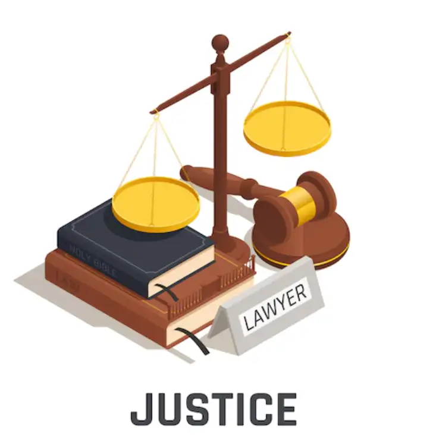

“大多数人因为看见才相信，只有少数人因为相信而看见。”
——金斯伯格
2020年9月18日，白宫为一位传奇女性降下半旗致哀，她便是金斯伯格，美国联邦最高法院历史上第二位女性大法官，一位女权主义者，年轻女性们亲切地称她为“声名狼藉”的金斯伯格。如今，她已然成为精神符号，带领广大女性群体，站在巨人的肩膀上，继续为争取、维护与保障女性权利而奋斗。
女性平权运动由来已久。1848年，女权运动第一次集会上，68名女性和32名男性签署了《情感宣言》，借用《独立宣言》的形式，提出了“男女生而平等”的理念；1920年，宪法第十九修正案认可了女性投票权；1972年，尼克松签署通过《教育法》修正案第九条，禁止教育系统中的性别歧视；1996年，“美利坚合众国诉弗吉尼亚州案”判决要求弗吉尼亚军事学院必须招收女性......就像金斯伯格所说：“社会变革需要逐步累积、循序渐进。真正的、可持续的改变需要一步一个脚印才会发生。”
1933年，金斯伯格出生于贫穷混乱的纽约布鲁克林区，她的妈妈从小便教导她以淑女的标准要求自己，并永远保持独立。成为淑女意味着坚持信念，保持自尊，耐心教导他人，不让负面情绪占据心灵；而永远保持独立则意味着，如果能够遇到真爱度过一生固然很好，但首先必须学会独立。这影响了金斯伯格的一生，虽然她在一生中曾遭受许多不公，以第一名毕业，却因性别被律所和法院拒之门外，又因怀孕被解雇，但她仍不懈推动着女性权益运动的发展和进步。正如金斯伯格所说：“我从不以我的性别为由要求特别优待，我对男性同胞的唯一要求便是给女性以基本的尊重。”
金斯伯格在康奈尔大学就读时，遇到了和她共度一生的灵魂伴侣马丁，在其他人仅仅赞扬她的美貌时，马丁是第一个懂得欣赏她聪明才智的男生。后来，他们一起考上了哈佛法学院，并互相支持着走过一生，在人生的重要抉择上，马丁一直给予金斯伯格尊重、支持和鼓励，从未改变。
1959年，金斯伯格以第一名的成绩毕业，想成为一名律师，但由于是女性，没有律所愿意雇佣她。后来，她在大学担任法学教授，推进了很多女权主义工作，1972年，她成为第一位在哥伦比亚大学获得终身教职的女性。
金斯伯格崭露头角，她的身影开始出现于美国最高司法殿堂——最高法院。作为律师，她在美国最高法院辩护了六宗争取女性权利的案件，包括美国历史上具有里程碑意义的里德诉里德案，这是美国最高法院第一次将美国宪法第十四修正案平等保护条款推及到妇女权益保障的案例。
金斯伯格在里德诉里德案辩护状中写道：“女性看似是被捧在高台上细心呵护，但细看之下却是被关在了伪装成高台的牢笼之中......男权社会把女性作为低等公民对待……一个人不应因自己的生理特征而在法律中处于不利地位。”

在“斯科拉克诉国防部长案”中，通用电器公司的女性员工对公司提起了诉讼，因为通用电器公司要求所有女性员工一旦结婚就必须马上辞职，而员工健康保险将怀孕保险排除在外。金斯伯格的辩护状中写道：“个人发展和平等机会不应该被刻板印象所限制......解雇怀孕女性的规定，是阻碍女性发展的障碍......迫使他们接受自己在社会中从属、依附的地位。”1978年，美国国会通过了《反怀孕歧视法案》，明确规定，如果雇主区别对待孕妇，就会被认为是歧视女性。
随着越来越多的争取女性权利的案件改变了法律，金斯伯格声名鹊起，1993年，她成为美国历史上第二位女性最高法院大法官。2015年，她被《时代》周刊列为年度全球100位最具影响力人物。
正如金斯伯格所说：“不要被他们拖住后腿，伸手去够星空”，作为一名内核强大的女性，她告诉我们：“不论对男性还是女性，获得权力的第一步是要让别人看到自己，并展现自己的才能。当女性获得权力时，男性女性之间的障碍将会逐渐消失。当社会看到女性的成就时，更多的女性会站出来，我们的社会也将更加平等。”她教导我们：“女性要为我们热衷的事业而奋斗，不是单打独斗，要想办法让志同道合的人加入我们一起奋斗。”她鼓励女性成为自己人生的决策者：“所有决策都应该有女性参与，女性不应该是例外。”
尽管可能失败，提出异议时，金斯伯格撰写的异议意见书总是语气平和、有理有据。正如金斯伯格所说： “无论如何，希望永存。今天输了，明天还有希望。”
参考资料：《异见时刻：“声名狼藉”的金斯伯格大法官》
撰稿｜Jane
排版、封面｜杜婉婷
图片 | unDraw/freepik